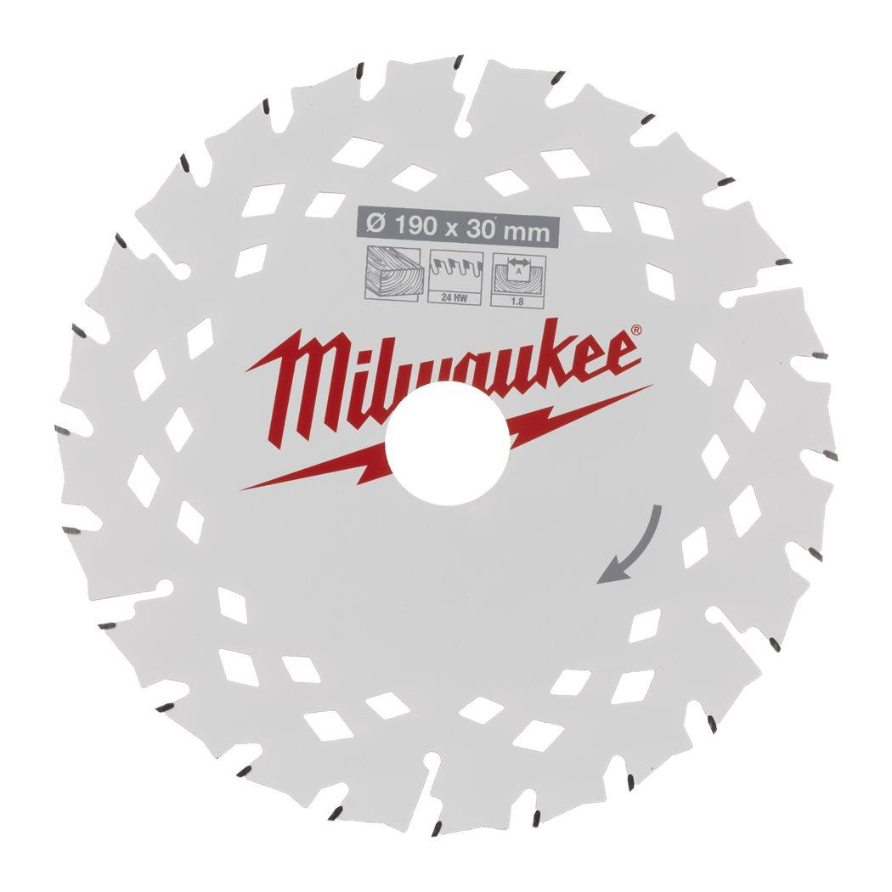
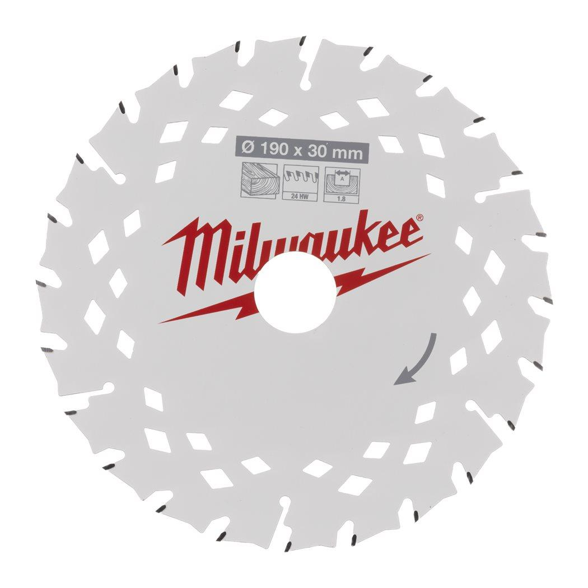

| All Wood Types | ✔ |
| Blade diameter (mm) | 190 |
| Bore size (mm) | 30 |
| Cutting width (kerf) (mm) | 1.8 |
| Hook Angle | +12° |
| Materials suited for | Wood|Green wood |
| No. of teeth | 24 ** |
| Pack quantity | 1 |
| Thin Kerf | ✔ |
| Tooth Form | ATB |
| Article Number | 4932498976 |
| EAN | 4058546528454 |